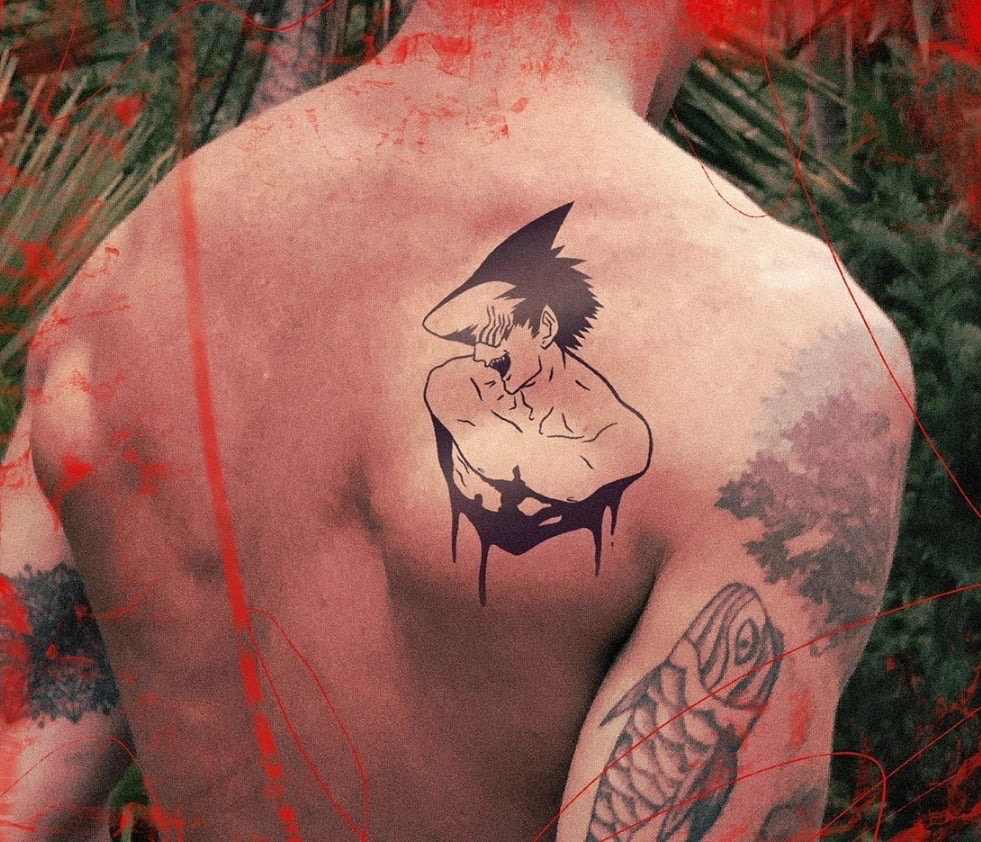
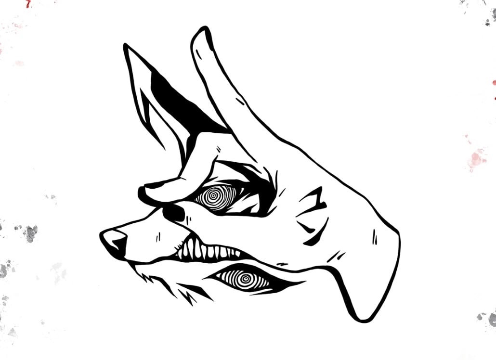

Тату пак по аниме Человек-Бензопила.
"Chainsaw Man" - увлекательная манга, которая покорила сердца многих читателей. Этот темный, но захватывающий комикс, наполненный экшеном и юмором, быстро стал популярным, как в Японии, так и за её пределами. В главной роли своенравного, забитого подростка, способного превратить свои конечности в мощный инструмент, « Человек с бензопилой » предлагает необычную историю, орды дьяволов-убийц и собаку, которая на самом деле является бензопилой. Набить тату с аниме Человек Бензопила осмелится сделать настоящий ценитель японской манги и аниме.
 - «Человек-бензопила» уникальна тем, что сочетает в себе стандартные составляющие сёнена.
- «Человек-бензопила» постоянно балансирует между сёненом и сэйненом, одновременно разрушая шаблоны и следуя некоторым клише. Но небанальных ходов тут всё же больше.
- К идеологической составляющей своей манги автор тоже подошёл нестандартно. В романтической линии автор тоже сумел избежать клише.
- Aвтор «Человека-бензопилы» показывает знакомую историю куда жёстче, чем это принято в рядовых сёненах. У Фудзимото «грязный» стиль рисовки, поэтому уродливые демоны и кровавые сражения выглядят особенно впечатляюще.
- Если вы любите всяких демонов и жутких существ или ищите что-то хоть отдалённо напоминающее Dorohedoro — это повод прочесть. Атмосфера здесь похожая, что само по себе уже лучшая рекомендация.